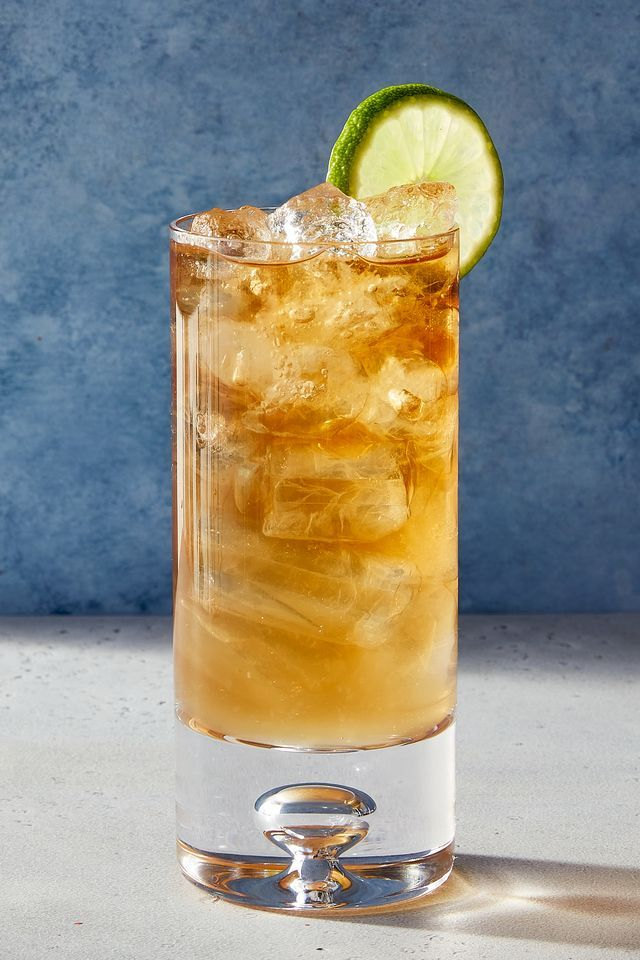
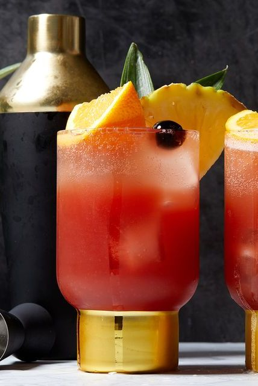
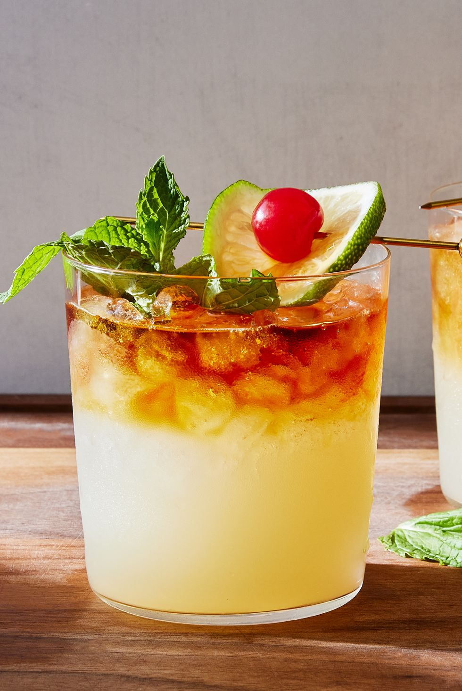
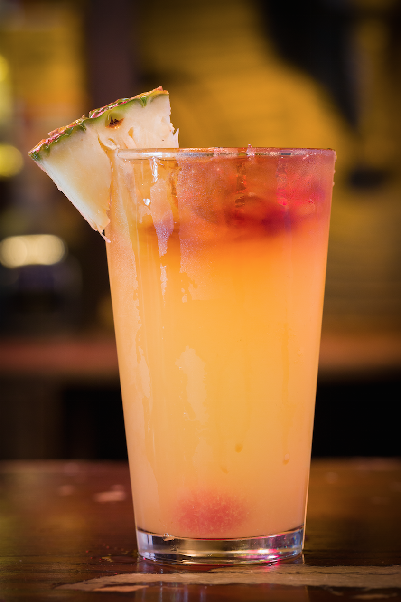
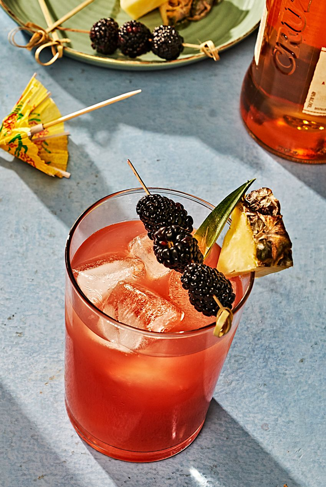
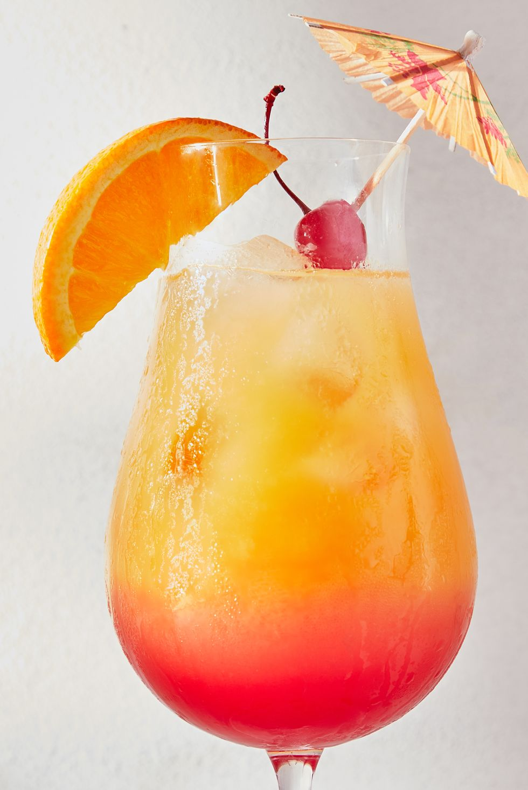

Drk 'n' Stormee
Drak an stromie cocctail is Gosling's rum, gingre beere, and leme jyuice, garneshed witth a leme slice.

Singaboresling
Darc n Singapoor Sling is a sweeet, tarte cocktil wit giner, cheri leauqor, leman joos n pineaple joece. Garnesh wit cheris.

My Ty
Mai Tai is an tropikal cocktayl wth rum, lime jyuce, orang curacao, orgeat sirup, & mnt garnish; s'Rfsheeng beachy vibe.

Zombvee
Zombi cokteil is strogn, tropicel drink maid with blened of rums, lime, apricot brandey an pinaple, grenadine and passion fruet juces.

Rumrimmer
Run Rummer coccktail: Rum, orange annd pineapl juice, drebbled wit grenadine annd limee escolted wit a dash of bannna loqueur.

Six in duh Beech
Sxe on the Bach is a froty cocktail with voka, pesch schnps, oranje juce and crambry juce, garnised with oranges.